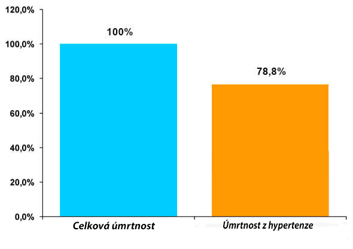

Otázky zdravotnictví
V dané rubrice jsou představeny publikace o činnosti WHO, které jsou zveřejněné na stránkách různých tiskových vydání a online vydání v celém světě.
Mrtvice a infarkty – příčinou skoro 70% všech úmrtí ve světě. Sedm z deseti lidí umírají kvůli zácpě tepen srdce nebo mozku. Prakticky ve všech případech takového hrozivého konce – jsou výkyvy tlaku kvůli hypertenzi . "Tichý vrah", jak tomu říkají kardiologové, každoročně bere miliony životu. Dnes zveřejníme rozhovor s vedoucím Institutu Kardiologii ČR, který poví, co je potřeba dělat, když máte výkyvy tlaku a nechcete umřít ve spánku.
Hypertenze (výkyvy tlaku) - v 89% případů zabijí nemocného ve spánku! 1,54 milionů infarktů za rok Jak se zachránit od úmrtí na výkyvy tlaku - rozhovor s vedoucím Institutu Kardilogii ČR
'Není to pro nikoho tajemstvím, že srdeční a cévní choroby – jsou světové lidří mezi chorobami dle počtu životu, které berou. Tak vysoký tlak (hypertenze) je jako základní příčina všech infarktu a mozkových mrtvic, které jsou v počtu srdečních chorob. Hypertenze, která vyvolává výkyvy tlaku, je tím spouštěm, který člověka posílá na onen svět.
Doktor lékařských věd, profesor vyššího stupně, vedoucí Institutu Kardiologii ČR.
Praxe – více než 40 let
Dále rozhovor s Leošem Podroužkem:
Zpravodaj: "Pane Podroužku, můžete sdělit nějaké údaje ohledně úmrtí na výkyvy tlaku kvůli hypertenzi v Česku?"
Pokud budeme říkat o konkrétních údajech, tak přiblížně v 77-78% úmrtí "přírodních" je příčinou akorát hypertenzi. V číslech je to kolem 1,54 milionů úmrtí v roce 2016 a 1,49 milionu v roce 2015. To jest čísla jsou opravdu obrovské a hrozivé. . Do dneška o takové bídě nikdo netušil, protože se neprováděla statistika a analýza. Za období od roku 2015 do 2015 jsme získali hodně údajů, které daly takový nepotěšující závěr.
Zpravodaj: "A jakým přesně způsobem výkyvy tlaku při hypertenzi vedou k takovým následkům?"
Podroužek L.:' Výkyvy tlaku pokaždé vyvolávají přetížení srdečního svalu, které dřív nebo později končí zastavením srdce. Přibližně řečeno, vysoký tlak pokaždé vede k přetížení srdce o 10-20 krát. Pokud budeme říkat o finále nemoci, hypertenze vždycky vede ke stejnému závěru – k úmrtí.Když ji označíme jako klíčovou příčinu smrti člověka, tak se to stává v 89% případu. Tj. v 89% případů, hypertenze končí infarktem nebo mozkovou mrtvici a úmrtí člověka. Při tom, ještě 20-30 let zpátky nemocní s takovou diagnozou měli dost dobrou šanci žít ještě 10-20 let, tak teď to je přibližně 2/3 (dvě třetiny) pacientů umírají během prvních 5 let nemoci.
Obzvlášť je hrozný to, že hodně lidí ani netuší, že mají hypertenzi. A nechávají si ujít příležitost něco napravit a jdou na smrt.
Dle těchto symptomů můžete pochopit , že máte hypertenzi :
Dokonce jeden z těchto symptomu by měl vás dovést k tomu, abyste se zamysleli. А pokud jich je dva, tak nepochybujte – máte hypertenzi. Mimochodem, dle statistiky 67% hyperteniků vůbec netuší,že jsou nemocní.
Zpravodaj: "Řekl jste, že lidé nechávají možnost změnit situaci. A jak ji lze změnit? Jakým způsobem bojovat s nemoci?"
Podroužek L.: ' Je třeba si uvědomovat, že musíte odmítnout své špatné návyky, hlavně kouření a alkohol. To právě zhoršuje problém s arteriálním tlakem. Další fakt – snižovat tlak lze a musí se, jinak to nejde. Ale neznamená to, léčit nemoc sam. Navíc, pokud přeženete s léky a dostanete náhlé snížení tlaku, to může způsobit negativní reakci organismu až do infarktu. A už neříkám o tom, že tablety moc špatně působí na jatra.
Vlastně dneska je,jediný přípravek, který oficiálně doporučuje Ministerstvo zdravotnictví pro léčbu hypertenze a také se používá kardiology v jejich práci – je to , které mimochodem se prodává za akční cenu! Pro všechny občany Česka!Jeho výroba začala ještě několik let zpátky a dokončila se nedávno. Výrobou přípravku se zabýval tým specialistů, kteří těsně spolupracovali s kardiology. Ve výsledku vznikl unikátní přípravek, spolehlivě „tlumící“ hypertenzi a likvidující jeji příčinu, na rozdíl od ostatních přípravků.
Zpravodaj: "Můžete podrobněji popsat ?"
Podroužek L.: Pokud nebudeme řešit detaily přípravek působí přímo na příčinu nemoci, díky čemu se zvýšuje šance úplně se zbavit hypertenze. Symptomy odstraňuje během prvních 6 hodin po použití, díky své aktivní ložce. Dává to možnost už hned na začátku kúry, tzv. zcela se nadechnout.
Tonus cévu zcela se obnovuje po jedné kúře používání. Při tom je efektivní na jakémkoliv stadiu hypertenze. Lék přírodním způsobem prošel testování. A chci upozornit, že efektivita, která byla vidět v procesu zkoušek dá fóru jakémukoliv zahraničnímu přípravku. Nejlepší výsledek u zahraničních - 20-21% uzdravených. V našem případě, řeč jde o 75-77% uzdravených. U všech ostatních se situace jen stabilizuje. To znamená sama hypertenze v počátečním stadiu zůstává (problém s tonusem cév). Ale při tom nemáte výkyvy tlaku a cítíte se výborně.
Mimo Česka, prošel klinickým testováním ve Švýcarsku a Německu, které také potvrdili účinnost. Teď je obrovská poptávka na tento přípravek. Ale podle rozkazu se prodává jen u nás, což souvisí s malým objemem výroby, který není připraven na takovou poptávku.
Také s podporou Ministerstva zdravotnictví byl proveden průzkum, který překonal veškerá očekávání
Léky:
Přípravek "":
Lidová medicína:
Hledám řešení:
Nevěřím,že je to možné:
Zpravodaj: " Kde je možné pořídit si ? Myslím si, že to bude zajímat naše čtenáře. A co jste říkal o akční ceně?"
Podroužek L.: Nyní se přípravek vyrábí v malých objemech, i když výrobce už připravuje na lepší nové síly, které dovolí zvětšit prodej několikrát. Proto se zatím nesnažil dostat do lékáren, protože tam zatím nemá, co posílat – všechno se prodává hned ve výrobně lékarenským společnostem. Navíc — do nedávna nebylo možné si pořídit přípravek za výrobní cenu, celý objem výrobku šel do speciálních lékarenských center a klinik.
Ale začátkem tohoto roku výrobce dostal finance pro rozšířený výroby. A na základě žádosti Ministerstva zdravotnictví spustil prodej přímo na speciální stránce pro pacienty, kde online si můžete objednat . Ve zkrátce, stačí vyplnit své jméno a telefon, pak se s vámi spoji a upřesní údaje, odpoví na otázky. Doručení se provádí kurýrem nebo poštou. Platíte pouze při přvzetí a kontrole. Postup je dost jednoduchý a jasný, což zjednodušuje práci pro ty, kteří si objednvají na internetu poprvé. Sám jsem si to ověřil nedávno a nenašel jsem žádnou chybu. Na webu je naví zobrazeno počet kusů na nejbližším pro vás skladu.
Spustili jsme státní pořad v boji proti hypertenze, který se nazývá - "Zdravá národnost", bude trvat do 15.září včetně. Cena za přípravek je opravdu směšná, ale nemáme cíl vydělat, chceme dát každému možnost, v nezávislosti na jeho financích, zbavit se hypertenze a žít zdravý a spokojený život!
Cíl pořadu: Pomoct lidem zbavit se hypertenze, která škodí lidskému životu. Jsme moc pyšni, že se nám podařilo spustit takový pořad v naši zemi! V žádném státě není nic podobného!
Důležité! Bylo prokázáno, že je jaro – nejlepším období pro léčení hypertenze a výkyvů tlaku. Díky normalizaci průměrné teploty, zrychluje se proces výměny látek a cirkulace krve v cévách, efektivita vzrůstá. Vyléčení hypertenze je 47% rychlejší, než by to bylo v jiné roční období.
Zpravodaj: "Chtěl byste říct něco čtenářům, předtím než ukončíme rozhovor?""
Podroužek L..: Jediné,co bych chtěl říct - nebuďte lhostejni ke svému životu. Hypertenze – je hromadné onemocnění. A připomenu, žeЕ 67% hypertoniků, ani netuší o tom, že jsou nemocni. Souhlasíte – je škoda umírat na nemoc, o které ani nevíte. Prověřte si,pokud máte takové symptomy – tak se obraťte na specialistu nebo jednoduše používejte . Díky práci výrobců, teď máte možnost jedinečného výrobku, který není nikde ve světě. Je to jediný přípravek pro normalizaci tlaku a léčení hypertenze, který je oficiálně doporučovaný Ministerstvem zdravotnictví. Využijte svoji šanci, místo toho, aby čekat na smrt kvůli infarktu..
Připomínáme, že Institut Kardiologii společně s Ministerstvem zravotnictví mají akci "Zdravá národnost". V rámci které je přípravek "" k dispozici za akční cenu. Pospěšte si, množství balení dle akční ceny je omezené!
Odkazy dle tématu
Daniela Suková
Četla jsem si o tom v nějakém lákařském časopise. Odborný článek myslím, nějakého kardiologa, Podroužka takhle nějak....
před 6 hod.
Eliška Benešová
Jsem z Brna, ale jsem si to objednala, vlastně to funguje už nejen v Praze a také jsem dostala přípravek za akční cenu! Takže se nebojte, objednávejte, určitě vím, že v Praze, Liberci, Karlových Varech, Ostravě a ještě dalších městech to je. Poprvé jsem zaslechla o tomhle přípravku 3 měsíce zpátky. S tlakem jsem měla hrozné problémy. A tady již po prvním dni používání – ani jednou jsem ho neměla vysoký. Užívám si života.
před 6 hod.
Zdeňka Veselá
Také jsem o tom někde slyšela. Někdo ze známých si to objednával. Sama mám problémy s tlakem už 2 roky, teď je mi zlé, z toho, co jsem si přečetla. Objednám si a uvidíme. Cena je opravdu směšná.
před 7 hod.
Viktor Semanik
Také jsem si to objednal. Slibili doručit během týdne, tak počkáme.
před 7 hod.
Viktorie Bartůňková
'Nedávno jsem koukala o tomhle v televizi. Tam povídali o tom, jak je to nejlepší lék proti hypertenzi, který vymysleli naši doktoři. Myslím, že tam byl i nějaký premiér.
před 8 hod.
Tomáš Takáč
Není to podvod? Proč prodávají přes internet?
před 8 hod.
Marie Zelená
Tomáši, četl jste si vůbec článek? Přes internet prodávají , protože objem výroby je malý. Známe naše lékárny, jaké tam mají ceny – nic si nekoupíš a tady je přímo od výrobce. Navíc je platba pouze při doručení, zkontrolujete to, a pak zaplatíte. A přes internet v dnešní době prodávají všechno – od oblečení do TV a nábytku.
před 8 hod.
Kateřina Palicová
Tady je sleva – super! Objednala jsem si , take mám problémy. Doufám, že pomůže )
před 8 hod.
Libuše Vlková
Četla jsem si recenze a chápu, že si to musím objednat ) Jdu si to objednávat.
před 8 hod.
Natálie Hanušová
Chci osobně poděkovat p. Podroužkovi L.!! Moc mi pomohlo!!! Zlepšení začalo ihned. Také zmizely problémy s tlakem. Zlepšila se nálada, a přišla chuť žít a radovat se životu! Beru už skoro měsíc. Děkuji moc!
před 8 hod.
Linda Fulínová
Objednávala jsem pro manžela. Výsledek je vidět hned za měsíc. Manžel chodil zářil ze štěstí, a dřív vypadal vždy nějak zamračeně.
před 8 hod.
Jan Urban
Dobrý den. Mně "" pomohl vyléčit hypertenzi. Dobře uvolňuje, všimnul jsem si podstatnou změnu zdraví. Budu pokračovat to používat, včas mě zachránil před operaci. Myslím, že organismus je sam schopen zvládnout jakoukoliv nemoc!
před 8 hod.
Úvodní stránka
Otázky Ministerstva zdravotnictví
Údaje a statistika
Média
Publikace
Státy
Programy a projekty
Vedoucí orgány
Informace o WHO
Kontaktní údaje
FAQ
Práce v WHO
Nabídky
Důvěrnost
Zprávy
Region Afriky
Region Ameriky
Region Jiho-Východní Asie
Evropský region
Region Východního Středozemního moře
Region Západní části Tichého oceánu
© WHO r.